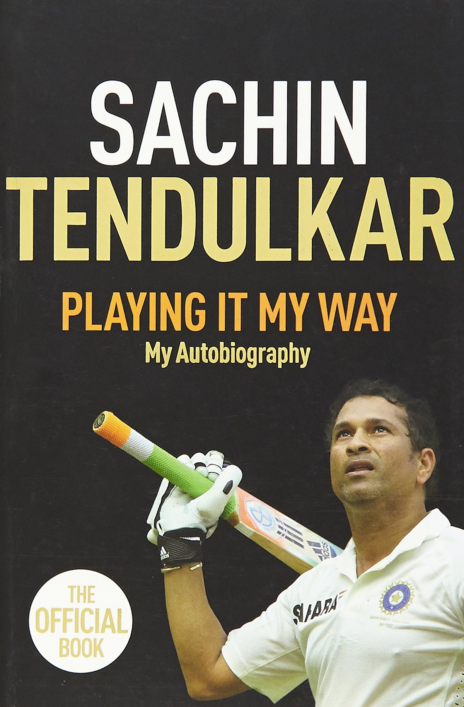
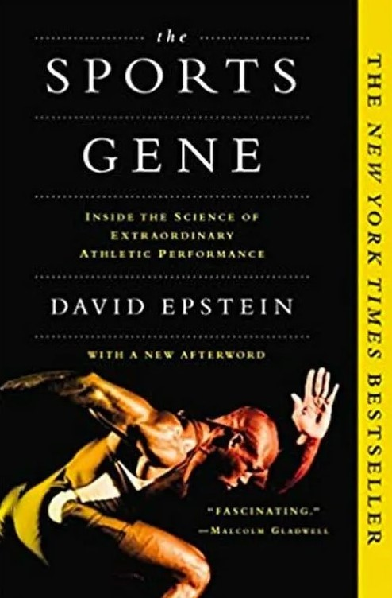

Playing It My Way

Playing It My Way is the autobiography of former Indian cricketer Sachin Tendulkar. It was launched on 5 November 2014 in Mumbai.[3][4][5] The book summarises Tendulkar's early days, his 24 years of international career and aspects of his life that have not been shared publicly.[6] It entered the Limca Book of Records for being the best selling adult hardback across both fiction and non-fiction categories. In India, it broke the record set by Walter Isaacson's biography of Steve Jobs for being the most pre-ordered biographical book.[7]In the book, Tendulkar mentioned that just months before the 2007 Cricket World Cup, Greg Chappell, then the coach of the Indian cricket team, visited Tendulkar at his home and suggested that he should take over the captaincy from Rahul Dravid, then the team captain. Chappell however denied this, stating that he never contemplated Tendulkar replacing Dravid as captain.
No Spin: My Autobiography Paperback
From the start of his glittering career in 1992, to his official retirement from all formats of the game in 2013, Shane Warne has long desired to tell his incredible story without compromise. No Spin is that very story. It will offer a compelling intimate voice, true insight and a pitch-side seat to one of cricket's finest eras, making this one of the ultimate must-have sports autobiographies.
Shane is not only one of the greatest living cricket legends: he is as close as the game has had since Botham to a maverick genius on the field and a true rebel spirit off it, who always gives audiences what they want. Despite being the talismanic thorn in England's side for nearly two decades of regular Ashes defeats, he was also much loved in the UK where he played cricket for Hampshire. He's also a much-admired figure in India and South Africa.
The Sports Gene: Inside the Science of Extraordinary Athletic Performance

Epstein explores racial differences in sports performance and examines both nature and nurture arguments for why certain populations (such as Jamaicans and Kalenjin) are overrepresented among top performers in the 100 meters sprint and marathons respectively. Epstein examines the argument that Kalenjin tend to have a body type conducive to distance running in part due to Allen's Rule. He also explores the contribution of growing up and training at altitude, as well as the phenomenon of running to and from school. In the course of his research, Epstein followed geneticist Yannis Pitsiladis to Jamaica, where he explored folklore that Jamaican sprinters descend from a warrior class of maroons. Pitsiladis analyzes DNA in Jamaica, and finds no special signature that links maroons and sprinters, and concludes that the genetic evidence does not support the island folklore. Rather, both Epstein and Pitsiladis place considerable emphasis on the popularity of the national high school track and field championships as part of the Jamaican sprint dynasty.
Football has always measured success by what you win, but only in the last twenty years have clubs started to think about how you win. Data has now suffused almost every aspect of how football is played, coached, scouted and consumed. But it’s not the algorithms or new metrics that have made this change, it’s the people behind them.
This is the story of modern football’s great data revolution and the group of curious, entrepreneurial personalities who zealously believed in its potential to transform the game. Central to this cast is Chris Anderson, an academic with no experience in football, who saw data as an opportunity to fundamentally change a sport that did not think it could be changed. His aim: to infiltrate the strange, insular world of professional football by establishing a club whose entire DNA could be built around data.